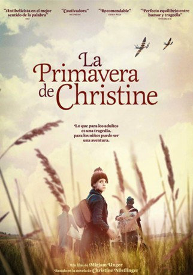

IMDB-Wertung: 6.4 / 10
IMDB-Wertung: 6.4 / 10  Metascore:
Metascore: 
Find showtimes, watch trailers, browse photos, track your Watchlist and rate your favorite movies and TV shows on your phone or tablet!
 IMDB-Wertung: 6.4 / 10 Metascore:
Find showtimes, watch trailers, browse photos, track your Watchlist and rate your favorite movies and TV shows on your phone or tablet!
Jahr: 2016
Dauer: 109 Minuten
FSK:
Land: Österreich Studio: Alambique Destilaria de IdeiasTonspuren:
Untertitel:
Auflösung: 1080p (1920x808) Größe: 3655 MB
Genre: Drama
Regisseur: Mirjam Unger
Drehbuch: Régis Anders
Soundtrack:
Darsteller:
 Konstantin Khabenskiy als Cohn
Konstantin Khabenskiy als Cohn Ursula Strauss als Mutter
Ursula Strauss als MutterDatei: X:\2016(G-M)\Maikäfer flieg (2016, FSK, 1920x808).mkv seit 23.02.2017
Festplatte: HD 2016(A-Z)
 Es gibt insgesamt 164 Filme in der Gruppe '2016(G-M)'
Es gibt insgesamt 164 Filme in der Gruppe '2016(G-M)'